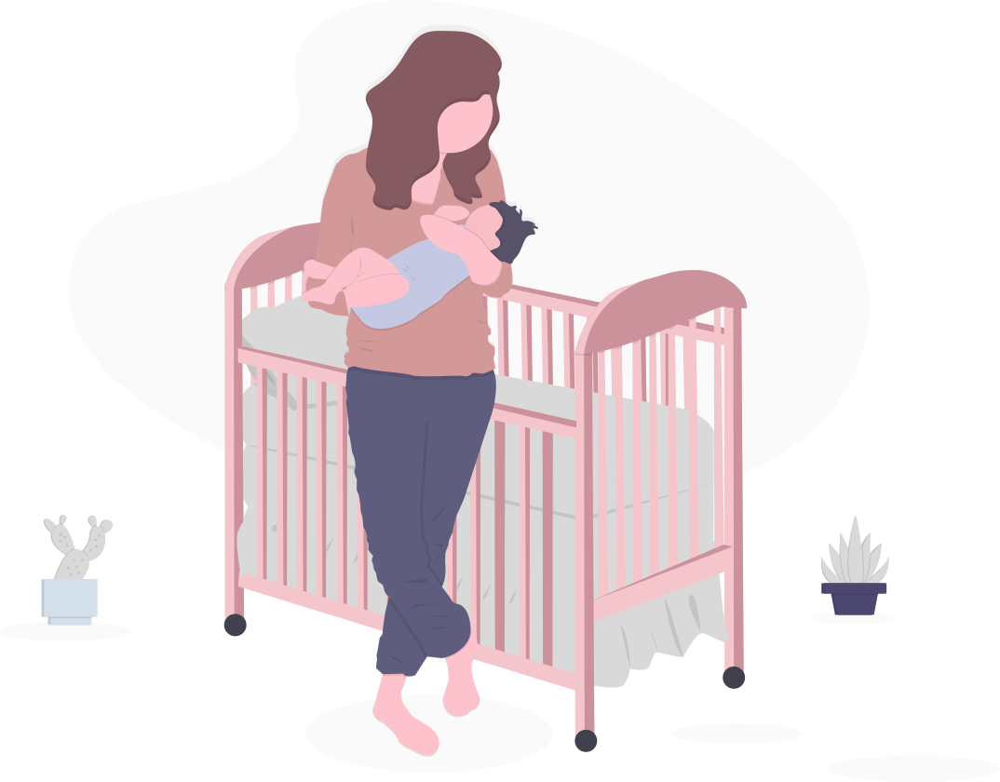
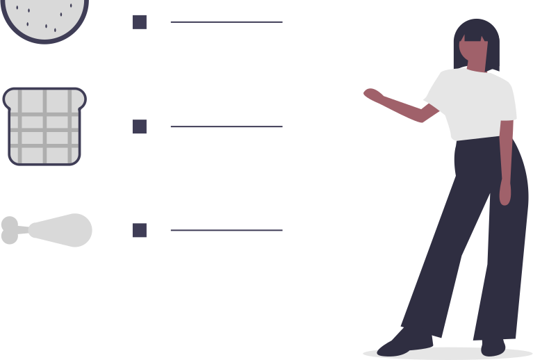
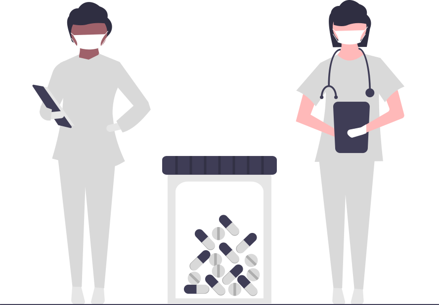
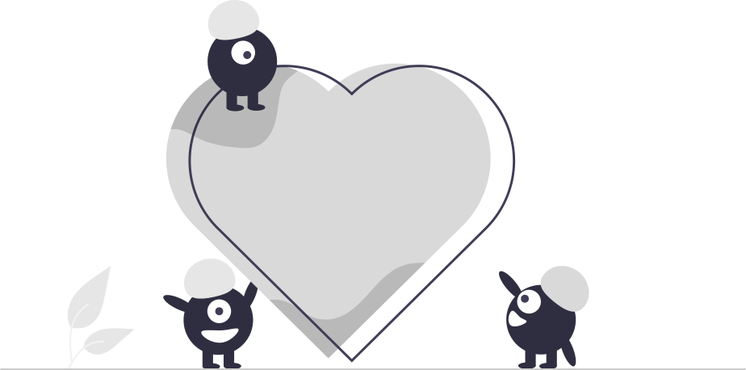
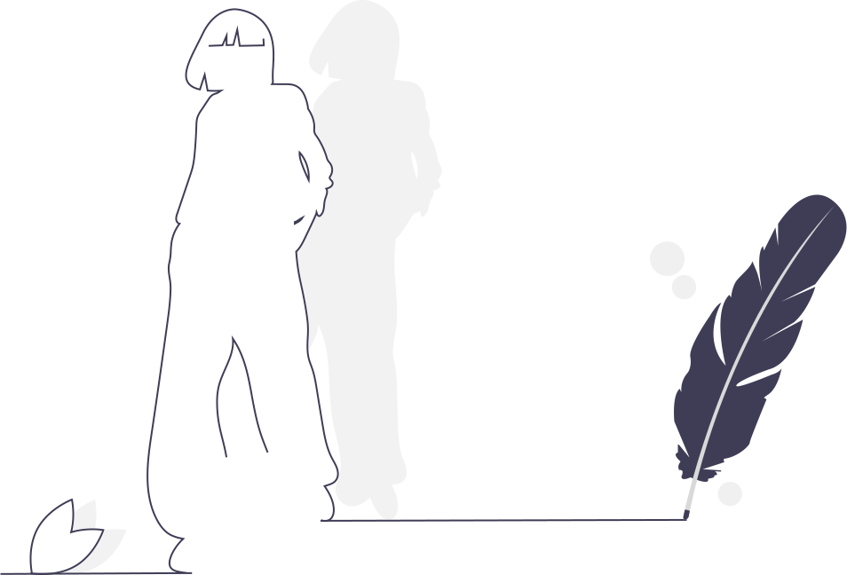

M
A
K
O
A
"Salvando vidas con gotas"
M
A
K
O
A
Requisitos para Donar
Requisito 1
El rango de edad es de 18-65 años
El motivo de que este requisito sea indispensable para la donación de sangre es debido a que las personas fuera de dicho rango son más susceptibles a sufrir hematomas, desmayarse o experimentar otras complicaciones cuando donan
Requisito 2
Estar en condiciones aptas
Para donar es importante no presentar síntomas o signos tales como tos, escurrimiento nasal, dolor de garganta, diarrea, entre otros.
Requisito 3
Peso adecuado = 50 kg
Esto es porque no se debe extraer más de 13% del volumen total de sangre de la persona y las personas que pesan menos de 50 kg no pueden donar esa cantidad.
Requisito 4
No estar embarazada o lactando
El cuerpo humano necesita tiempo para reponer la sangre donada. La razón por la que no debes donar sangre si estás embarazada es que el ritmo al que repondrás la sangre que dones será mucho más lento que cuando no lo estabas.
Requisito 5
No haber consumido alcohol en las últimas 48 horas
El consumo de alcohol antes de la donación sí puede contraindicar la misma, dependiendo de cuándo y cuánto se haya consumido. Después de donar, hay que esperar dos horas antes de ingerir bebidas alcohólicas.
Requisito 6
Estómago preparado
¿Cómo es tener un estómago preparado? Bien, nos referimos a un desayuno ligero. No dejes pasar más de 4 horas sin comer. Evita consumir grasas, lácteos y huevo (ya que esto puede alterar la composición de la sangre). Asimismo, te recordamos que puedes consumir frutas.
Requisito 7
No haber recibido cirugías o trasplantes.
En el caso de una cirugía menor (hemorroides, varices, sutura de heridas, hernias, etc.) y / o extracción dental no complicada, esperar 7 días o hasta que estés recuperado.
Por otro lado, en el caso de cirugía mayor esperar 6 meses; si hubo transfusión de sangre, es necesario esperar un año.
Requisito 8
No utilizar drogas
Este es un requisito muy importante, se pide que no se consuman drogas por lo menos en las últimas 2 semanas antes de la donación.
Requisito 9
No consumir analgésicos o antibióticos
Esto se debe a que dichos medicamentos se utilizan para luchar contra ciertas infecciones. Para evitar un posible contagio a través de la donación se exige que hayan pasado al menos 15 días tras tomar los fármacos.
Requisito 10
No padecer enfermedades graves del corazón
Si se padecen enfermedades graves del corazón, lamentablemente no será posible donar puesto que se debe gozar de buena salud para este procedimiento.
Requisito 11
No haber padecido infecciones
No haber sido detectado con VIH, Enfermedad de Chagas o Hepatitis por virus B o C. Asimismo, es importante mencionar que no se debe haber tenido relaciones sexuales de riesgo en el último año.
Sin embargo, en el caso de las personas que padecieron Hepatitis A antes de los 10 años de edad sí es posible donar.
Requisito 12
No perforaciones o tatuajes, incluso acupuntura en los últimos 12 meses
Este tiempo se toma como el tiempo prudencial que se deja para descartar, al 100%, una posible infección y estar en condiciones óptimas y seguras (para todos) al momento de donar. Lo mismo ocurre si te has hecho un piercing.
